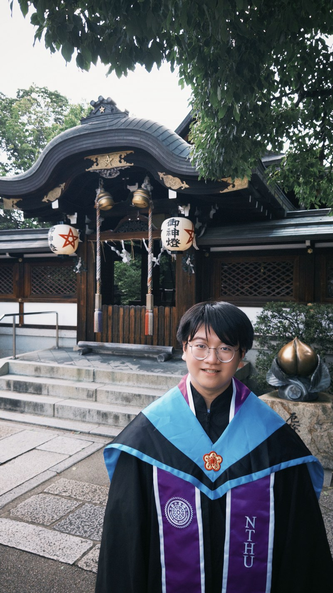
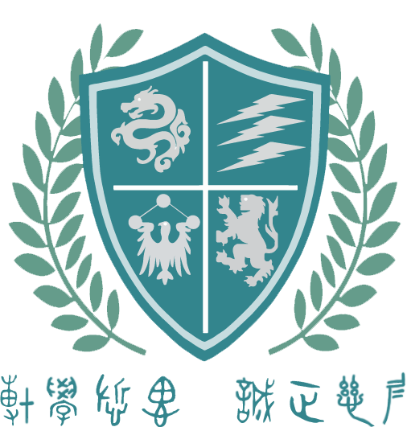

關於我
 關於我
關於我ABOUT — 基本資料・學歷・識別標誌・理念
基本資料
PROFILE- 中文姓名
- 曾 櫳震
- 客語拼音（海陸腔）
- 教育部客語拼音／zen⁵³ liung⁵⁵ zhin²⁴ IPA 國際音標／[tsen⁵³ liuŋ⁵⁵ tʃin²⁴]
- 中文姓名音譯
- TSENG, BRIAN LIUNGZHIN （AKA TSENG, Long-Zhen [in Mandarin]）

學歷
EDUCATION-
2022 – 2026
國立清華大學 臺灣語言研究與教學研究所 碩士
Master of Linguistics at Institute of Taiwan Languages and Language Teaching, National Tsing Hua University (Hsinchu, Taiwan)學位論文 THESIS《新竹海陸客華雙語者華語音變現象研究》Phonetic characteristics of Hakka Mandarin used among Taiwan Hoi-liug Hakka and Mandarin bilinguals in Hsinchu閱覽摘要及全文：國立清華大學博碩士論文庫｜臺灣博碩士論文知識加值系統【國家圖書館正在編目上架中，請稍候。】 -
2018.09 – 2022.06
國立東華大學 中國語文學系 學士
Bachelor of Arts at Department of Chinese Language and Literature, National Dong Hwa University (Hualien, Taiwan) -
2015.09 – 2018.06
新竹縣私立內思高級工業職業學校（現內思工業高級中等學校） 資訊科（電機電子群）
Department of Computer Science and Information, St. Aloysius Technical School, Hsinchu County, Taiwan -
2012.09 – 2015.06
新竹縣立自強國民中學
Hsinchu County Tzu-Chiang Junior High School
識別標誌與姓名意涵
EMBLEM & NAME
《周易．說卦傳》：「震一索而得男」，家族中排序為長男，故名中有一「震」字。震卦在東，五行屬木，色青，四靈對應青龍，故名中有一「櫳」字，係龍加以木字偏旁而成。
【櫳字在古典文本中的應用範例】宋代話本小說〈碾玉觀音〉季春詞：「先自春光似酒濃，時聽燕語透簾櫳。小橋楊柳飄香絮；山寺緋桃散落紅。」
左上龍紋即「櫳」字圖像化；右上三道閃電代表「震」。左下文鳥紋代表文學，星辰紋代表光明；右下獅子紋代表勇氣與堅毅。整體盾牌型代表富有力量抵禦一切困難，勇於前行。左右麥穗象徵以飽滿學識為目標。
下以金文書寫座右銘「博學慎思 誠正慈仁」。博學、慎思語本《禮記．中庸》；誠正慈仁則為忠恕之謂。曾子曰：「盡己之謂忠，推己及人之謂恕」，呼應竹東九芎林曾家堂號「忠恕堂」。
理念
STATEMENTS本人支持《國家語言發展法》之施行，尊重臺灣、澎湖、金門、馬祖等地區固有族群之語言如臺灣客家語、臺灣閩南語、臺灣原住民族各族語、馬祖閩東語等，皆為平等，並應受尊重，永續傳承。
本人支持111課綱將本土語文列為必修。
本人願意多加使用、傳承本人之母語臺灣客家語。
本人支持婚姻平權以及多元成家。本人認為應尊重各種性別認同及性傾向的人士，並且他們應被平等對待與尊重，故本人支持LGBTQ族群伴侶多元成家，也在保護兒少、培養正確觀念的前提下，支持施行正確的性教育。